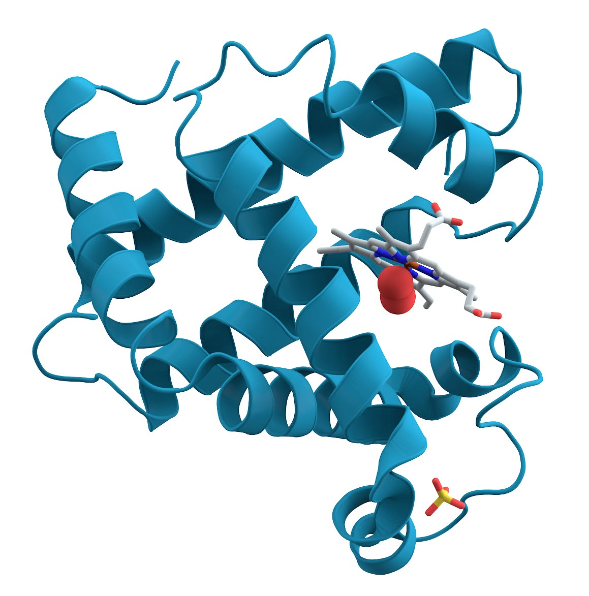

Αρχείο · Επιστημονική επικοινωνία στα ελληνικά
Γιατί το κρέας έχει διαφορετικό χρώμα;
Μυοσφαιρίνη, μιτοχόνδρια και μυϊκή φυσιολογία πίσω από το χρώμα του κρέατος.

Αρχικό κείμενο
Αυτή είναι η μυοσφαιρίνη. Είναι ο κύριος λόγος, μαζί με τα μιτοχόνδρια, που τα κρέατα που τρώμε έχουν διαφορετικό χρώμα.
Το κρέας της πάπιας είναι πλούσιο σε μυοσφαιρίνη και μιτοχόνδρια και λόγω των χρωστικών τους φαίνεται σκούρο. Αντίθετα το λευκό κρέας, όπως το στήθος του κοτόπουλου δεν περιέχει καθόλου από αυτά τα δύο και για καύσιμο χρησιμοποιεί κυρίως το άχρωμο γλυκογόνο.
Οι σκούροι μύες των ζώων λέγονται αλλιώς βραδείας σύσπασης και “καίνε” ενέργεια αργά. Χρησιμεύουν για δραστηριότητες μεγάλης διάρκειας και για αυτό τα αποδημητικά πουλιά έχουν σκούρο κρέας. Οι κότες και οι γαλοπούλες που χρησιμοποιούν τα φτερά τους για πολύ λιγότερο έχουν περισσότερο λευκό κρέας.
Γενικά τα ζώα έχουν μια από τις δύο κατηγορίες μυών ή και τις δύο, ανάλογα με τις ανάγκες τους. Όμως εμείς, αλλά και όλα τα υπόλοιπα θηλαστικά διαφέρουμε. Έχουμε αυτό που λένε κόκκινο κρέας, δηλαδή αντί να έχουμε μερικούς λευκούς και μερικούς σκούρους μύες, έχουμε και τις δύο κατηγορίες μυικών ινών, οπότε το χρωματικό αποτέλεσμα που προκύπτει είναι το ροζ.
Fun fact: Το κόκκινο ζουμί που βρίσκεται στο μέτρια σιγοψημένο (medium-rare) κρέας δεν είναι φυσικά αίμα αλλά μυοσφαιρίνη.